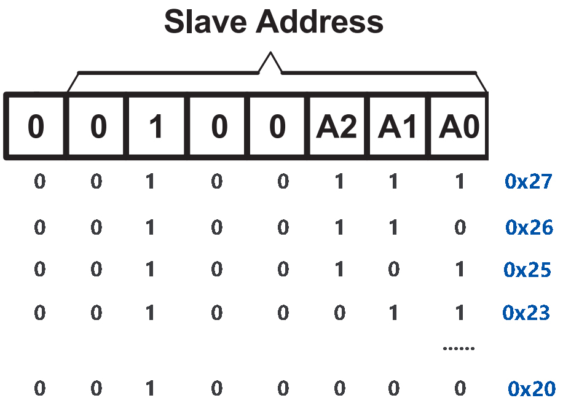
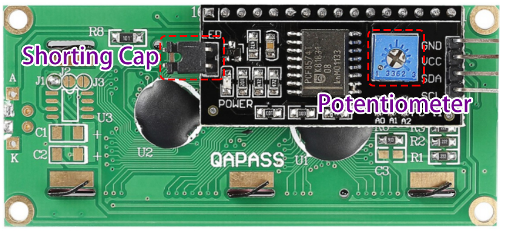

Note
Hello, welcome to the SunFounder Raspberry Pi & Arduino & ESP32 Enthusiasts Community on Facebook! Dive deeper into Raspberry Pi, Arduino, and ESP32 with fellow enthusiasts.
Why Join?
Expert Support: Solve post-sale issues and technical challenges with help from our community and team.
Learn & Share: Exchange tips and tutorials to enhance your skills.
Exclusive Previews: Get early access to new product announcements and sneak peeks.
Special Discounts: Enjoy exclusive discounts on our newest products.
Festive Promotions and Giveaways: Take part in giveaways and holiday promotions.
👉 Ready to explore and create with us? Click [here] and join today!
1.1.7 I2C LCD1602
Introduction
LCD1602 is a character type liquid crystal display, which can display 32 (16*2) characters at the same time.
Components

Principle
I2C LCD1602

GND: Ground
VCC: Voltage supply, 5V.
SDA: Serial data line. Connect to VCC through a pullup resistor.
SCL: Serial clock line. Connect to VCC through a pullup resistor.
As we all know, though LCD and some other displays greatly enrich the man-machine interaction, they share a common weakness. When they are connected to a controller, multiple IOs will be occupied of the controller which has no so many outer ports. Also it restricts other functions of the controller.
Therefore, LCD1602 with an I2C module is developed to solve the problem. The I2C module has a built-in PCF8574 I2C chip that converts I2C serial data to parallel data for the LCD display.
I2C Address
The default address is basically 0x27, in a few cases it may be 0x3F.
Taking the default address of 0x27 as an example, the device address can be modified by shorting the A0/A1/A2 pads; in the default state, A0/A1/A2 is 1, and if the pad is shorted, A0/A1/A2 is 0.
{kind=link}
Backlight/Contrast
Backlight can be enabled by jumper cap, unplugg the jumper cap to disable the backlight. The blue potentiometer on the back is used to adjust the contrast (the ratio of brightness between the brightest white and the darkest black).
Shorting Cap: Backlight can be enabled by this cap，unplugg this cap to disable the backlight.
Potentiometer: It is used to adjust the contrast (the clarity of the displayed text), which is increased in the clockwise direction and decreased in the counterclockwise direction.
Schematic Diagram
T-Board Name |
physical |
SDA1 |
Pin 3 |
SCL1 |
Pin 5 |

Experimental Procedures
Step 1: Build the circuit.

Step 2: Setup I2C (see I2C Configuration. If you have set I2C, skip this step.)
For C Language Users
Step 3: Change directory.
cd ~/davinci-kit-for-raspberry-pi/c/1.1.7/
Step 4: Compile.
gcc 1.1.7_Lcd1602.c -lwiringPi
Step 5: Run.
sudo ./a.out
After the code runs, you can see "Greetings","From SunFounder" displaying on the LCD.
Note
If there is an error prompt
wiringPi.h: No such file or directory, please refer to Install and Check the WiringPi.If you get
Unable to open I2C device: No such file or directoryerror, you need to refer to I2C Configuration to enable I2C and check if the wiring is correct.If the code and wiring are fine, but the LCD still does not display content, you can turn the potentiometer on the back to increase the contrast.
Code
#include <stdio.h>
#include <wiringPi.h>
#include <wiringPiI2C.h>
#include <string.h>
int LCDAddr = 0x27;
int BLEN = 1;
int fd;
void write_word(int data){
int temp = data;
if ( BLEN == 1 )
temp |= 0x08;
else
temp &= 0xF7;
wiringPiI2CWrite(fd, temp);
}
void send_command(int comm){
int buf;
// Send bit7-4 firstly
buf = comm & 0xF0;
buf |= 0x04; // RS = 0, RW = 0, EN = 1
write_word(buf);
delay(2);
buf &= 0xFB; // Make EN = 0
write_word(buf);
// Send bit3-0 secondly
buf = (comm & 0x0F) << 4;
buf |= 0x04; // RS = 0, RW = 0, EN = 1
write_word(buf);
delay(2);
buf &= 0xFB; // Make EN = 0
write_word(buf);
}
void send_data(int data){
int buf;
// Send bit7-4 firstly
buf = data & 0xF0;
buf |= 0x05; // RS = 1, RW = 0, EN = 1
write_word(buf);
delay(2);
buf &= 0xFB; // Make EN = 0
write_word(buf);
// Send bit3-0 secondly
buf = (data & 0x0F) << 4;
buf |= 0x05; // RS = 1, RW = 0, EN = 1
write_word(buf);
delay(2);
buf &= 0xFB; // Make EN = 0
write_word(buf);
}
void init(){
send_command(0x33); // Must initialize to 8-line mode at first
delay(5);
send_command(0x32); // Then initialize to 4-line mode
delay(5);
send_command(0x28); // 2 Lines & 5*7 dots
delay(5);
send_command(0x0C); // Enable display without cursor
delay(5);
send_command(0x01); // Clear Screen
wiringPiI2CWrite(fd, 0x08);
}
void clear(){
send_command(0x01); //clear Screen
}
void write(int x, int y, char data[]){
int addr, i;
int tmp;
if (x < 0) x = 0;
if (x > 15) x = 15;
if (y < 0) y = 0;
if (y > 1) y = 1;
// Move cursor
addr = 0x80 + 0x40 * y + x;
send_command(addr);
tmp = strlen(data);
for (i = 0; i < tmp; i++){
send_data(data[i]);
}
}
void main(){
fd = wiringPiI2CSetup(LCDAddr);
init();
write(0, 0, "Greetings!");
write(1, 1, "From SunFounder");
}
Code Explanation
void write_word(int data){……}
void send_command(int comm){……}
void send_data(int data){……}
void init(){……}
void clear(){……}
void write(int x, int y, char data[]){……}
These functions are used to control I2C LCD1602 open source code. They allow us to easily use I2C LCD1602. Among these functions, init() is used for initialization, clear() is used to clear the screen, write() is used to write what is displayed, and other functions support the above functions.
fd = wiringPiI2CSetup(LCDAddr);
This function initializes the I2C system with the specified device symbol. The prototype of the function:
int wiringPiI2CSetup(int devId);
Parameters devId is the address of the I2C device, it can be found through the i2cdetect command(see Appendix) and the devId of I2C LCD1602 is generally 0x27.
void write(int x, int y, char data[]){}
In this function, data[] is the character to be printed on the LCD, and the parameters x and y determine the printing position (line y+1, column x+1 is the starting position of the character to be printed).
For Python Language Users
Step 3: Change directory.
cd ~/davinci-kit-for-raspberry-pi/python/
Step 4: Run.
sudo python3 1.1.7_Lcd1602.py
After the code runs, you can see "Greetings","From SunFounder" displaying on the LCD.
Note
If you get the error
FileNotFoundError: [Errno 2] No such file or directory: '/dev/i2c-1', you need to refer to I2C Configuration to enable the I2C.If you get
ModuleNotFoundError: No module named 'smbus2'error, please runsudo pip3 install smbus2.If the error
OSError: [Errno 121] Remote I/Oappears, it means the module is miswired or the module is broken.You can try screwing the potentiometer on the back if the code and wiring are fine, but the LCD still does not show the content.
Code
Note
You can Modify/Reset/Copy/Run/Stop the code below. But before that, you need to go to source code path like davinci-kit-for-raspberry-pi/python.
import LCD1602
import time
def setup():
LCD1602.init(0x27, 1) # init(slave address, background light)
LCD1602.write(0, 0, 'Greetings!!')
LCD1602.write(1, 1, 'from SunFounder')
time.sleep(2)
def destroy():
LCD1602.clear()
if __name__ == "__main__":
try:
setup()
except KeyboardInterrupt:
destroy()
Code Explanation
import LCD1602
This file is an open source file for controlling I2C LCD1602. It allows us to easily use I2C LCD1602.
LCD1602.init(0x27, 1)
The function initializes the I2C system with the designated device symbol. The first parameter is the address of the I2C device, which can be detected through the i2cdetect command (see Appendix for details). The address of I2C LCD1602 is generally 0x27.
LCD1602.write(0, 0, 'Greetings!!')
Within this function, 'Greetings!!' is the character to be printed on the Row 0+1, column 0+1 on LCD. Now you can see "Greetings! From SunFounder" displayed on the LCD.
Phenomenon Picture